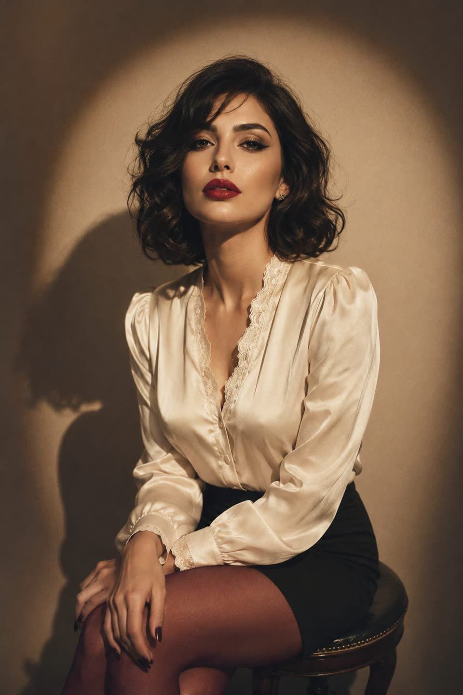

GPT Image 2.6 1970s studio glamour: ivory satin blouse, crimson lip, a spotlight halo on a warm beige wall, identity held from a reference
AES-092Aesthetic / GenreGPT Image 2.6by @mehvishs252026-11-19

A GPT Image 2.6 (ChatGPT) reference-driven portrait in a 1970s editorial look: short tousled bob with wispy bangs, smoky liner and deep crimson lip, an ivory satin blouse with a lace collar over a black tailored skirt, seated on a low vintage chair, with a single hard spotlight making a soft circular glow and a defined side shadow on a warm beige wall. It states its styling intent ("elegant, tasteful, and timeless rather than revealing") and ends with an identity lock and a "no artificial skin smoothing" line.
Prompt
Create a highly photorealistic cinematic vintage studio portrait of the same adult woman shown in the uploaded reference image. Preserve her exact facial identity, recognizable features, natural skin tone, face shape, eyes, nose, lips, and facial proportions without beautification or alteration. Appearance & Makeup: She has a short, softly tousled dark-brown bob with gentle loose curls framing her cheeks and delicate wispy bangs across her forehead. Her expressive hazel-brown eyes are enhanced with subtle smoky eyeliner, naturally shaped eyebrows, softly flushed cheeks, and elegant deep crimson-red lipstick. Her complexion is warm and luminous, with realistic skin texture and natural details. Outfit & Styling: She wears an elegant ivory satin blouse with a modest, softly draped neckline, delicate lace detailing around the collar, and subtle puff sleeves. The blouse is neatly fitted and tucked into a high-waisted black tailored mini skirt with a refined silhouette. Add sheer dark burgundy stockings for a sophisticated vintage-inspired look. The overall styling should feel elegant, tasteful, and timeless rather than revealing. Pose & Composition: She sits gracefully on a low vintage studio chair, leaning slightly forward with relaxed shoulders and a confident posture. Her hands rest naturally together on her lap. Her chin is gently raised as she looks directly into the camera with a confident, subtly mysterious expression. Lighting & Background: A minimalist warm beige studio wall serves as the background. A strong directional spotlight creates a soft circular glow behind her, accompanied by a beautifully defined shadow falling to one side. Rich warm shadows, gentle highlights across her face, and subtle cinematic contrast create an intimate vintage Hollywood atmosphere. Photography Style: Classic 1970s editorial portrait photography, vintage studio glamour, warm analog film tones, authentic skin texture, subtle film grain, sophisticated color grading, professional fashion photography, sharp facial focus, beautifully balanced composition, highly detailed, photorealistic, vertical portrait. Maintain the reference woman's exact identity throughout. No cartoon features, no anime aesthetics, no artificial skin smoothing, no exaggerated body proportions, and no changes to her recognizable appearance.
Our Seedance 2.5 adaptation
[ADAPTED for Seedance 2.5 by Grok Bot; not the creator's prompt. Follows the official BytePlus Seedance 2.5 prompt guide and its official sd25-pe prompt-optimizer skill: parameters only on the API line (not in the prompt body), subject + action + scene, then visuals, camera (move, subject, start, direction, arrival) and sound; only the source's own exclusions are kept.] API: duration 5, ratio 2:3 (taken from the first frame), resolution 1080p (4k for a final), generate_audio true; first_frame = the AES-092 still. 【Subject】The woman seated on the low vintage studio chair as in the first frame: short tousled dark bob with wispy bangs, crimson lips, ivory satin blouse with a lace collar, black tailored skirt. 【Action】She lifts her chin slightly, turns from a three-quarter view to face the camera, and settles her hands on her lap; a slow blink and a subtle, knowing smile. 【Camera】Static, eye level, vertical portrait framing; the spotlight halo stays behind her head. 【Visuals】Warm beige wall, one hard spotlight with a soft circular glow and a defined side shadow, warm analog tones, subtle film grain, real skin texture. 【Sound】Quiet studio room tone, the faint click of a camera shutter twice.
Tags: GPT Image 2.6, ChatGPT, 1970s editorial, studio glamour, spotlight halo, warm analog tones, identity reference, satin and lace, subtle grain, image